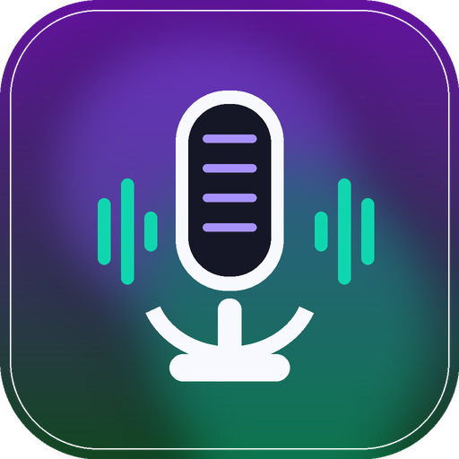

OpenVoiceFlow Media Kit
OpenVoiceFlow is a free push-to-talk voice dictation app for macOS. It transcribes audio locally with whisper.cpp, applies voice commands, optionally cleans up text with the backend the user chooses, and pastes the result at the cursor.
Free dictation for Mac users who want local audio transcription.
OpenVoiceFlow is built for people who want fast dictation without a subscription. Audio transcription runs on the user’s Mac; the text cleanup step can use OpenRouter Gemma 4, Groq, OpenAI, Anthropic, Ollama, or no cleanup.

Ready-to-use copy
One sentence
OpenVoiceFlow is a free push-to-talk voice dictation app for macOS with local audio transcription and optional text cleanup.
Short description
OpenVoiceFlow turns natural speech into clean text at the cursor. It records on command, transcribes audio locally with whisper.cpp, applies spoken punctuation and formatting commands, and lets users choose whether text cleanup is local, cloud-based, or disabled.
Social post
OpenVoiceFlow is a free macOS dictation app for people who want push-to-talk voice input, local audio transcription, and configurable cleanup. Download the Apple Silicon or Intel DMG from the website.
Fast facts
- Product
- OpenVoiceFlow
- Category
- macOS push-to-talk voice dictation
- Price
- Free
- Platforms
- macOS 12+ on Apple Silicon and Intel Macs
- Downloads
- Website-hosted DMGs for Apple Silicon and Intel
- Audio transcription
- Local whisper.cpp processing
- Cleanup options
- OpenRouter Gemma 4, Groq, OpenAI, Anthropic, Ollama, or none
- Repository status
- The source repository stays private during this launch phase
Useful links
Brand assets
App icon
Use the app icon when linking to OpenVoiceFlow or including it in a roundup. Keep the product name written as OpenVoiceFlow.
{kind=link}
Accuracy notes
- OpenVoiceFlow currently ships for macOS only; Windows and Linux downloads are not available.
- Audio transcription is local. Text cleanup may use a cloud backend unless the user chooses Ollama or no cleanup.
- The current public DMGs are not Apple-notarized yet. The release pipeline supports signing and notarization once Apple Developer credentials are configured.
- OpenVoiceFlow is not affiliated with Wispr Flow, Superwhisper, VoiceInk, Apple, GitHub, OpenAI, Anthropic, Groq, OpenRouter, or Ollama.